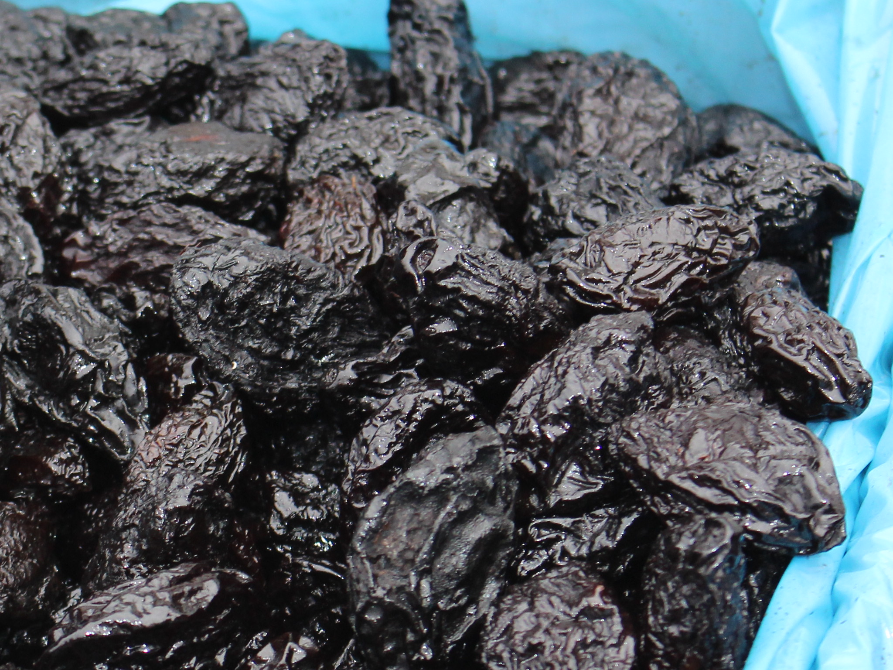
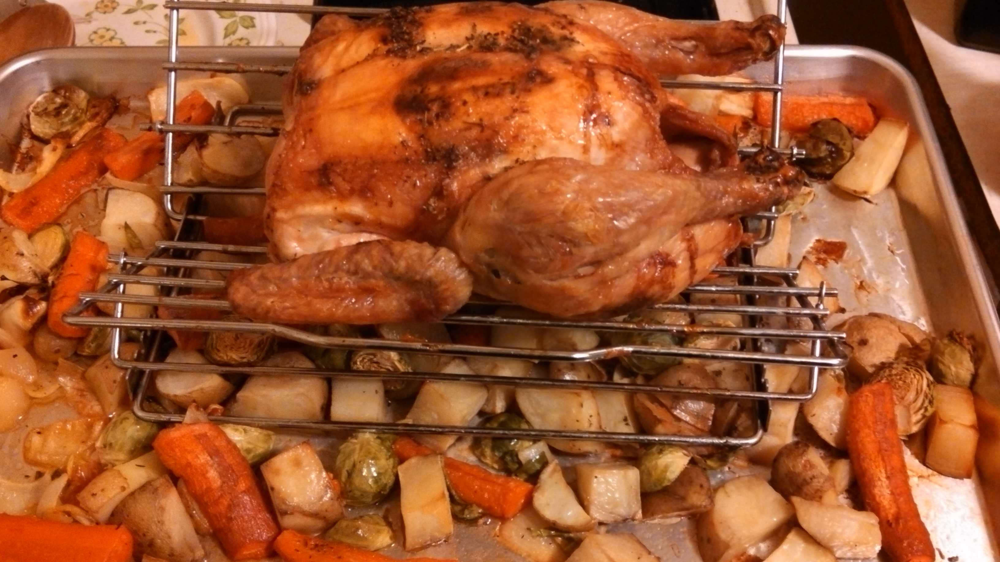

Feature
Pollo con ciruelas: una receta elegante, fácil y llena de sabor 🍗
El contraste perfecto entre lo salado y lo dulce para una comida especial sin complicarte la vida
Una receta de pollo con ciruelas jugosa, aromática y muy fácil de preparar. Ideal para una comida de fin de semana o una cena con invitados, con ingredientes sencillos y un resultado que parece de restaurante.

Hay recetas que parecen sofisticadas desde el primer vistazo, pero que en realidad son sorprendentemente sencillas. Este pollo con ciruelas entra de lleno en esa categoría: jugoso, aromático y con ese punto agridulce que transforma una comida cotidiana en algo memorable.
Lo mejor es que no necesitas técnicas complicadas ni una lista interminable de ingredientes. Solo una buena base, un poco de paciencia y dejar que el horno —o la cazuela— hagan gran parte del trabajo.
Key takeaways
Key Takeaways
- Una receta con sabor elegante y muy fácil de ejecutar.
- Las ciruelas aportan dulzor, profundidad y una salsa naturalmente melosa.
- Funciona igual de bien para una comida familiar que para una cena con invitados.
- Puedes acompañarla con arroz, puré de patata o cuscús.
- Se recalienta muy bien, así que también es perfecta para cocinar con antelación.
Ingredientes
Para 4 personas:
- 8 muslos de pollo, o 1 pollo troceado
- 200 g de ciruelas pasas sin hueso
- 2 cebollas grandes
- 2 dientes de ajo
- 150 ml de vino blanco
- 200 ml de caldo de pollo
- 2 cucharadas de aceite de oliva virgen extra
- 1 cucharadita de miel
- 1 rama de canela
- 1 hoja de laurel
- 1 pizca de tomillo
- Sal al gusto
- Pimienta negra al gusto
El secreto del plato ✨
La magia de esta receta está en el equilibrio. El pollo aporta la parte sabrosa y jugosa; la cebolla y el ajo construyen una base profunda; y las ciruelas hacen el resto: se hidratan, se funden ligeramente en la salsa y dejan un sabor redondo, dulce pero nada empalagoso.
La cucharadita de miel ayuda a redondear el conjunto, mientras que la canela introduce un fondo cálido muy sutil. No domina, solo acompaña.
Paso a paso
1. Dora bien el pollo
Salpimenta el pollo y dóralo en una cazuela amplia con el aceite de oliva. Hazlo a fuego medio-alto hasta que coja un buen color por ambos lados. No hace falta cocinarlo del todo en este punto; solo queremos sellarlo y potenciar su sabor.
Retíralo y resérvalo.
2. Prepara la base
En la misma cazuela, añade la cebolla cortada en juliana y los ajos picados. Cocina a fuego medio hasta que la cebolla esté tierna y ligeramente dorada. Este paso merece unos minutos: cuanto mejor esté pochada la cebolla, más rica quedará la salsa.
3. Construye la salsa
Incorpora el vino blanco y deja que reduzca un poco. Después añade el caldo, la miel, la canela, el laurel, el tomillo y las ciruelas.
Vuelve a poner el pollo en la cazuela, mezcla bien y tapa.
4. Cocina hasta que todo se una
Deja cocinar a fuego suave durante unos 35 a 40 minutos, hasta que el pollo esté tierno y la salsa haya reducido ligeramente. Si prefieres hacerlo al horno, puedes pasar todo a una fuente y hornear a 190 ºC durante unos 40 minutos.
El resultado debe ser una salsa brillante, con cuerpo y con las ciruelas ya suaves, casi integradas en el conjunto.
Cómo servirlo
Este pollo con ciruelas queda especialmente bien con:
- arroz blanco, para absorber toda la salsa
- puré de patata, si buscas una versión más reconfortante
- cuscús o bulgur, para un toque más aromático
- una ensalada verde sencilla, si quieres equilibrar el plato
También puedes terminarlo con unas almendras tostadas picadas o un poco de perejil fresco para darle contraste y textura.
Un plato que siempre luce bien
Hay recetas que cumplen una función muy concreta: quedar bien sin exigir demasiado. Esta es una de ellas. Tiene presencia, tiene aroma, tiene una salsa deliciosa y, sobre todo, tiene personalidad.
El pollo con ciruelas demuestra que con pocos ingredientes bien combinados puedes cocinar algo especial, acogedor y con ese punto festivo que hace que todo el mundo quiera repetir.
Further Reading
Si te gustan las recetas con contraste dulce-salado, esta misma idea funciona muy bien con albaricoques secos, higos o incluso manzana salteada.

